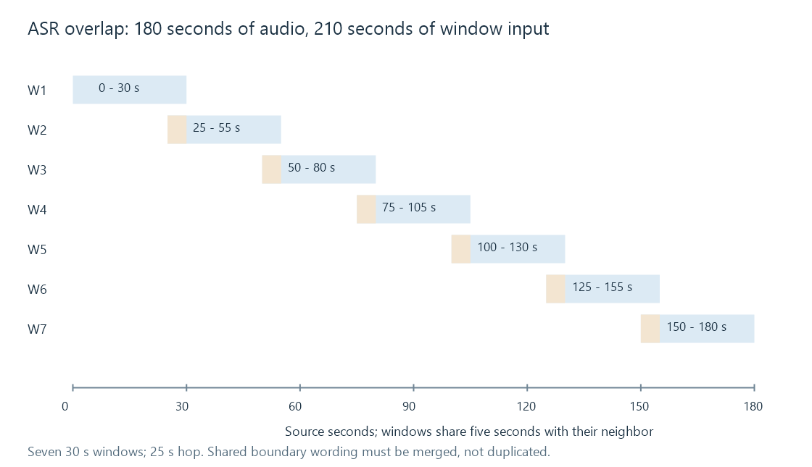

Automatic speech recognition for captions
ASR estimates spoken text from audio, after which alignment, caption segmentation and content review produce a useful timed-caption resource.
Automatic speech recognition, or ASR, estimates spoken words from audio. Producing a caption resource additionally requires timing, segmentation into readable cues, and review of the information the viewer needs.
Recognition, alignment and caption authoring can be combined in a tool, but they answer different questions:
| Stage | Question |
|---|---|
| Speech recognition | Which words were spoken? |
| Alignment/timing | Where do those words belong in the audio? |
| Caption segmentation | Which words form a displayed cue and interval? |
| Caption editing | Which speaker/sound information and corrections are needed? |
A transcript without timestamps is not yet a timed subtitle. Word timestamps alone are not automatically a readable cue layout.
Audio windows provide context
A model or processing pipeline can analyze windows with overlap. That gives neighboring windows shared context around a boundary.
Take an invented 180-second clip, using 30-second windows and a 25-second hop. Window starts are 0,25,50,75,100,125 and 150 seconds.

There are seven windows, each 30 seconds in this example. The processing sees 210 seconds of window content even though the source is 180 seconds. Six adjacent overlaps of five seconds account for the extra 30 seconds.
Repeated audio does not mean the final subtitle should repeat the boundary words. The output needs an appropriate merge/alignment strategy.
A chosen input sample rate also belongs to the model's requirements. At an illustrative 16 kHz, the 180-second mono clip contains 2,880,000 sample frames. Resampling to a model's expected rate should preserve programme time; changing a rate label without converting the signal would alter duration and pitch.
Recognition errors can be easy to miss
Suppose the intended sentence is:
Please meet me at the station.
and the estimated transcript is:
Please meet me at station.
With whitespace tokenization, the reference has six words. One deleted word gives a word error rate of 1/6 ≈ 16.7% for this defined example.
A wrong name or negation can be more consequential than a small average rate suggests. Fluency does not establish that the text matches the audio. The example is not a benchmark of any named model.
Music, overlapping speech, accents, unfamiliar names and poor recordings can affect the observation. The appropriate review compares against the audio rather than against a second sentence guessed from the same output.
Edited text can need renewed alignment
Correcting a word changes the transcript. Existing word timings may need adjustment to the corrected sequence before cues are rebuilt.
Cue boundaries should reflect the relevant speech and reading presentation. Arbitrarily putting every recognized word into its own cue can produce a flickering, awkward result. Conversely, a whole-minute transcript in one caption leaves little useful synchronization.
A rate or origin change later in the media route also needs to preserve the caption's programme timeline.
Accessible captions can require more than speech
A dialogue recognizer does not inherently provide useful speaker identity, an off-screen sound description or the significance of music stopping. SDH explains that content role.
For Emby, a reviewed generated resource can be supplied as an external supported subtitle with appropriate identification. This is an authored-file workflow, not a declaration that every Emby build includes a particular recognizer or model.
See Also
- Finding subtitle sources
- Subtitles for the deaf and hard of hearing (SDH)
- Subtitle cues
- Subtitle translation